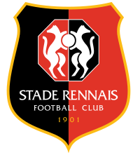
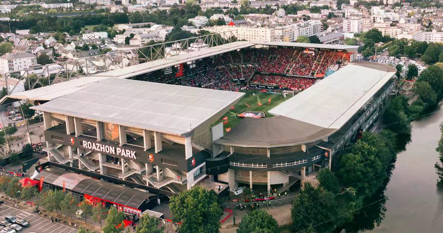

Treinador: Franck Haise
A história de Franck Haise é a de um estrategista paciente que emergiu das sombras da formação para revolucionar o futebol francês, transformando equipas operárias em máquinas de jogo coletivo vibrante através de uma visão tática arrojada e humanista.
Estádio: Roazhon Park
A história do Roazhon Park é uma das mais longas e ricas do futebol francês, marcada por uma evolução que acompanha o Stade Rennais desde os seus primeiros anos.

Estilo de Jogo:
No Stade Rennais, Franck Haise mantém a sua reputação de "arquiteto tático", mas adaptou os seus princípios à qualidade técnica superior do plantel do Rennes, focando-se num futebol de domínio territorial e transições agressivas.
"Tout pour les Rouge et Noir!"